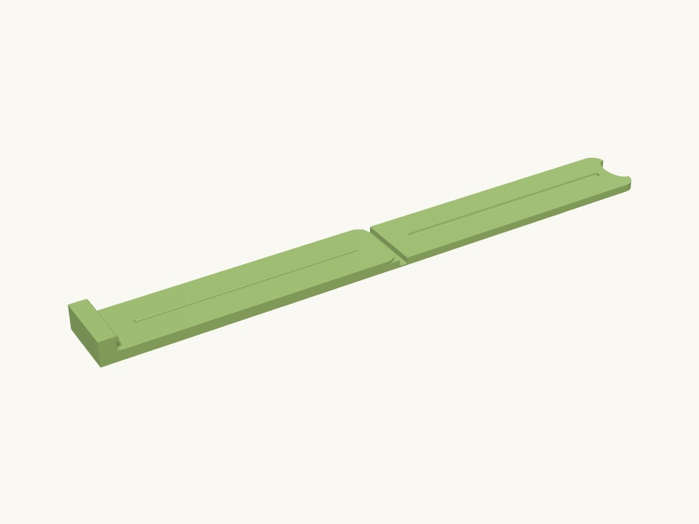

Work / Home

Technical details
Part: clip — printed open, 180 mm long: the lower jaw (90 x 20 x 3.2) and the upper jaw (84 x 20 x 2.4) end to end with a 0.5 mm mechanisms.living_hinge_web between them. Fold the upper jaw over: a half-round rib along the lower jaw (mechanisms.snap_ridge) presses the bag into a matching channel in the upper jaw (mechanisms.snap_groove, 0.3 mm wider for the film), and the upper jaw's tip snaps under a lip on the catch block at the lower jaw's end. The upper jaw is the spring: pushing its tip down the lip's 45 deg ramp bows it, and it springs into the 0.8 mm undercut. To open, push a thumb into the scoop at the tip toward the hinge and lift. Two 10 x 2 mm disc magnets glued into pockets in the underside hold it on the fridge door.
Print flat as built, PETG (the living hinge is validated in PETG and TPU; PLA fatigue-cracks within tens of folds). Fold once while the print is still warm. Declared hinged: the 0.5 mm web is the design, not a thin-wall defect. The catch block's undercut is a 0.8 mm deep, 2.8 mm tall horizontal slot in a vertical face: it bridges without support.
Assumptions (user unavailable): sized for a 20 mm jaw and a ~2.4 mm bow-to-snap; magnets 10 x 2 (use MAGNET_H = 3 and JAW_T_LOW = 4.4 for 10 x 3); no text on the jaws.
Parts
| Part | Size (mm) | Volume | Thinnest wall | Printability |
|---|---|---|---|---|
| clip | 176.5 × 20 × 7.8 | 9.8 cm³ | 0.5 mm | passes |
Engineering views
Downloads
- bag_clip.3mfwhole plate · 37 KB
- clip.stepSTEP · 150 KB
- clip.stlSTL · 143 KB
Library parts used
Parametric components shared with the other designs; see the parts library.
| Component | What it does | Printed in |
|---|---|---|
Magnet pocketfasteners.magnet_pocket | Negative (subtract me) blind pocket for a disc magnet, press- or glue-fit; mouth at z=0, pocket extends down. | not yet |
Living hingemechanisms.living_hinge_web | Thin flexible web joining two thicker panels (single-strip living hinge), hinge axis along Y, printed flat. | PETG, TPU |
Snap groovemechanisms.snap_groove | Negative (subtract me) half-round groove matching snap_ridge, cut into a wall face at y=0 going into -Y. | PETG, PLA |
Snap ridgemechanisms.snap_ridge | Half-round snap ridge (bead) running along X, protruding in +Y from a wall face at y=0; sits on a lid lip. | PETG, PLA |
Finger notchprimitives.finger_notch | Negative (subtract me) rounded finger scoop cut into an edge so a lid or jaw can be lifted; centred on the edge at the origin, cutting through Z. | not yet |
Source: models/bag_clip · built 2026-09-18 01:23
Fridge-magnet bag clip
A chip-bag clip with a living hinge, a sealing rib, a snap catch and two magnets so it lives on the fridge door.
Printed flat and open; fold it once while warm. The upper jaw is the spring: push its tip down the ramp and it snaps under the lip. A thumb in the scoop releases it. PETG, because the 0.5 mm hinge has to survive years of folding.
- Size
- 176 × 20 × 8 mm
- Print plate
- 176 × 20 × 8 mm
- Parts
- 1
- Filament (PLA)
- about 12 g
- Print time
- about 1.0 h
- Status
- Ready to print
Want it in another size, colour or material? Say so in the request: fitting it to your object is a $5 adjustment, and you see the revised design before it's printed.
Measure it, describe it, and we'll draw it.
Requests take a few minutes. You'll get the design and a price back before anything is printed.